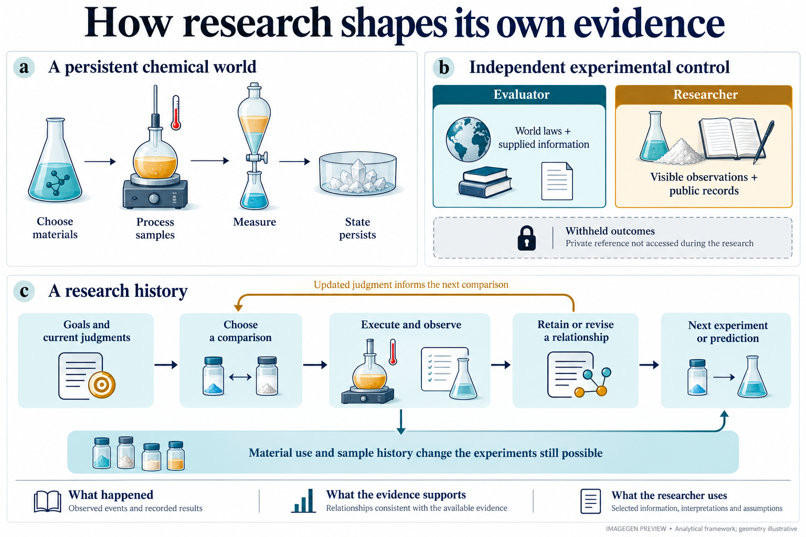
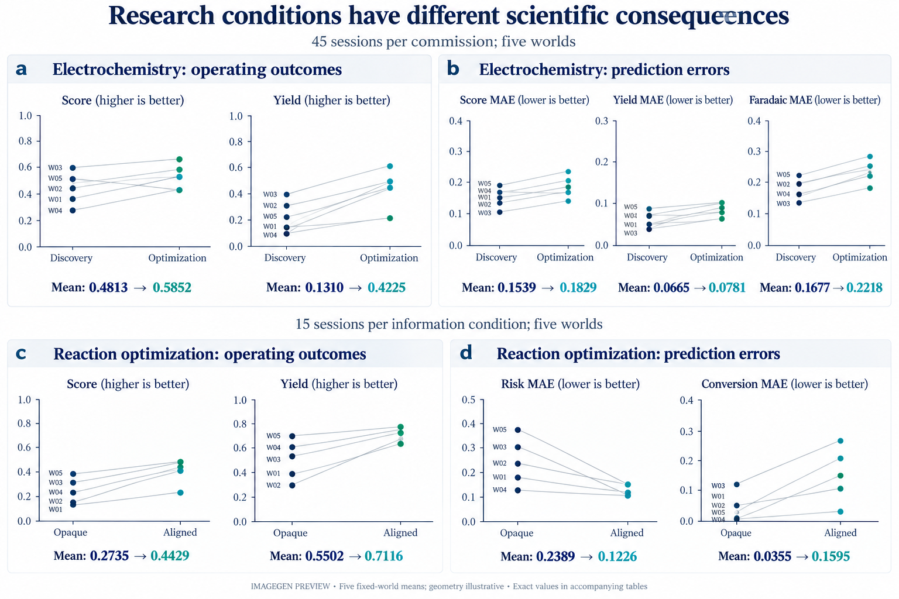
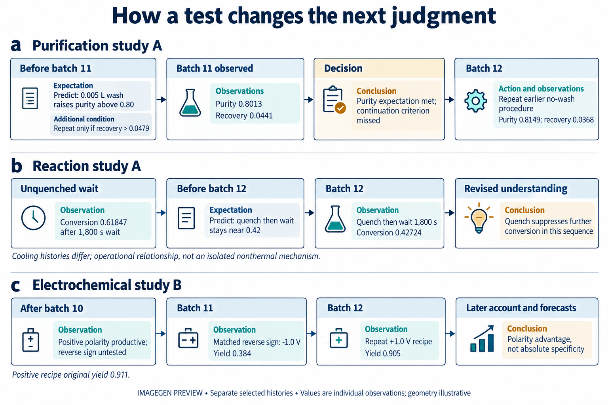
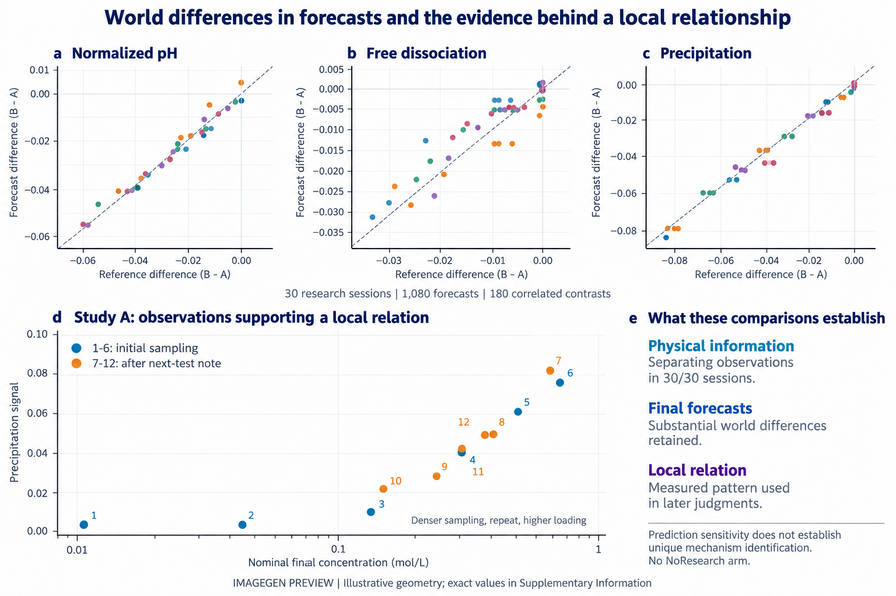
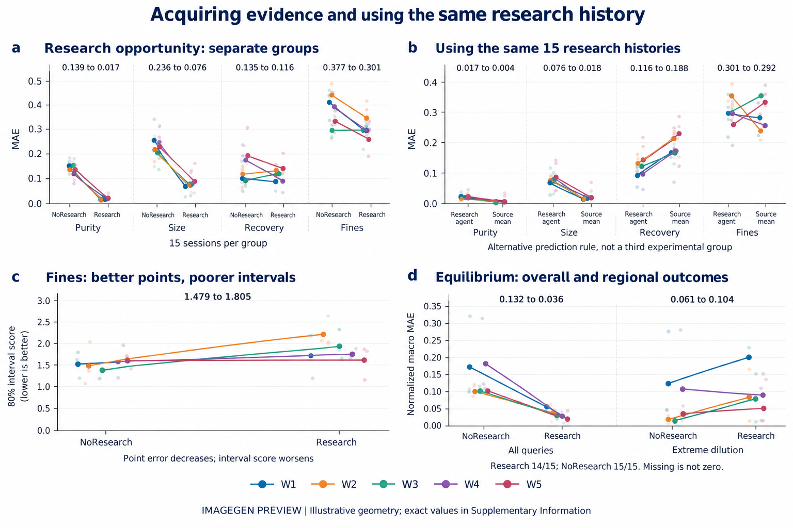

ChemWorld：五张主图预览
内置 ImageGen 临时图。几何仅供预览，精确数据见论文补充表。完整提示词

Figure 1 — fig01_inquiry.png

Figure 2 — fig02_conditions.png

Figure 3 — fig03_histories.png

Figure 4 — 配对世界预测差异与局部关系的观察基础

Figure 5 — 研究机会、同队列源观测参照及不确定性
本轮图4/5提示词与定向修改。全部点位与几何仍为ImageGen预览；精确结果见补充材料。